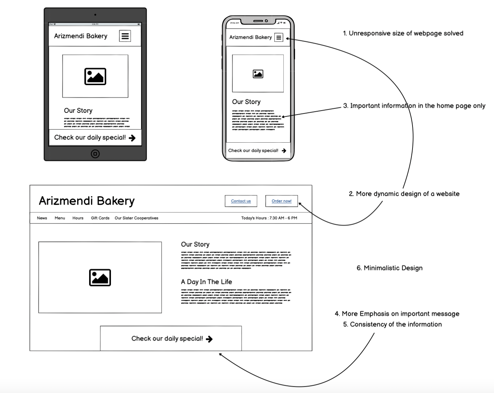
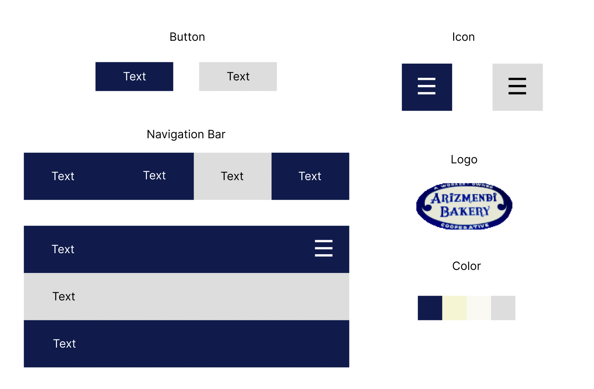

About the website
Arizmendi Bakery is a bakery/restaurant based in San Francisco, CA. I am redesigning the homepage of their website
Problem identification
1. Unresponsive size of the website
The size of the webpage is fixed, and not designed for computer screen size. This significantly makes the design looks poorly designed, and affect the aesthetics direct
2. Static design of the website
The webpage consists of multiple links. However, it is incredibly difficult to distinguish the link from other static text. This is because these links, and also the page in general, is mostly static. With the dynamics of links and other components, the websites will be easier to use, and also more aesthetically pleasing.
3. Irrelevant information on the home page
The homepage of the website should be the frontline to advertise and attract customers to the business. However, the homepage of this website only has news of the restaurant, and information of Covid, which feels out of place. This type of information should be replaced with the information that conveys the uniqueness/ selling point of the restaurant instead
4. No emphasis on important messages
Since this is a homepage of the restaurant. They should emphasize the messages that are important to the customers, such as opening time, menu, and how to order. However, the customers will have a tough time navigating through this website since every information looks like they have the same level of importance. By emphasizing size, color, or positioning of the components, the webpage can be more user-friendly and more aesthetically pleasing.
5. Inconsistency of the information
Some information looks like they convey the same thing, but they don’t. For example, they advertise pizza of the day and foods of the day in a very far away place. This information could go in the same place, or words more carefully.
6. More minimalistic design
It looks like the developer includes every information into this homepage when it is unnecessary. Therefore, the page looks too packed. Some information, and pictures look out of place. By reducing the information, the aesthetic will be better.
Accessibility Test
The results are mostly low contrast between text and background, and small text. This made the website less outstanding, user-friendly, and recognizable. Other points are redundant links, and redundant texts
Low-Fidelity Design
Problem Solution
1. Unresponsive size of the website
The sizes of the webpage/ components inside are dynamic according to screen size
2. Static design of the website
The webpage is now more dynamic there should be change at the navbar and buttons when hovering
3. Irrelevant information on the home page
Only included important information now
4. No emphasis on important messages
Important information is listed in huge navbar and buttons
5. Inconsistency of the information
Important information is listed in huge navbar and buttons. Same info is in the same place
6. More minimalistic design
Less crowded, more beautiful!
Visual Guideline
High-Fidelity Design
To access Figma, please use this link
The width and the height of images and components should be based mainly on the screen width and height. The navigation bar is fully dynamic. The link should change the color when hovering, and the bar should change its design when screen width is compressed. Lastly, the button to see the daily special is sticky so that the user can see it even after scrolling.